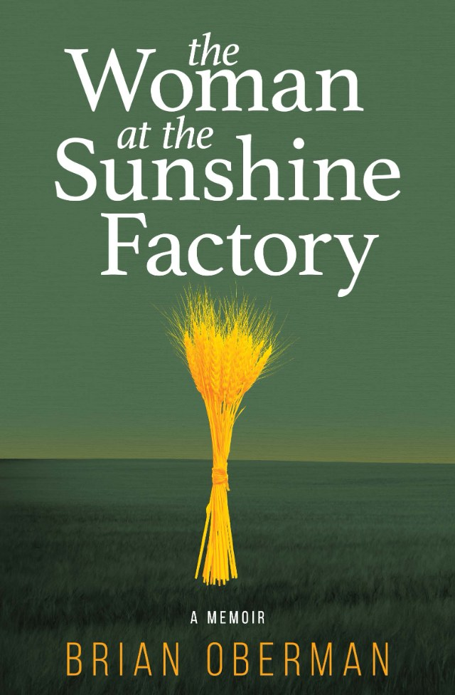

A life rebuilt from the inside out.
The courage to step into a future that looks nothing like the past.
A memoir
The Woman at the Sunshine Factory
By Brian Oberman. His upcoming memoir.
Advance praise
“What happens to your life when you are starting to fall in love with someone who has just been detained by ICE?”
Lainy Carslaw, author of Regrip
“Mr. Oberman pulls us into a hellscape of bureaucratic deadlines and indifference as Brian struggles to obtain all the documentation necessary for her release.”
Larry Barthurst, author of The Philosopher's Stone

The book
The Woman at the Sunshine Factory
Brian’s upcoming memoir traces the unexpected turns of a life rebuilt from the inside out.
It’s a story about resilience, truth-telling, and the courage to step into a future that looks nothing like the past. The book blends emotional honesty with sharp insight, offering a narrative that is both deeply personal and universally relatable.
Core themes
Threads running through the story
Resilience
Finding strength in the moments that test you most, and learning how to keep going anyway.
Identity
Unravelling who you were told to be, and stepping into who you actually are.
Connection
The relationships that fracture, heal, and ultimately define the shape of a life.
Truth
The cost and freedom of telling the truth, first to yourself, then to others.
Transformation
What it means to rebuild from the inside out, when the old life no longer fits.
Read more
Reviews and press
Identity, transformation, and the quiet moments that shape a life.
About Brian
Brian Oberman is a memoirist whose work explores identity, transformation, and the quiet moments that shape a life. His writing blends emotional clarity with grounded realism, offering readers a window into the human experience.
He writes with a steady, reflective voice that invites readers into the deeper layers of what it means to change, to love, and to rebuild.
“Where love resides, there lies hope.”
Larry Barthurst, author of The Philosopher's Stone